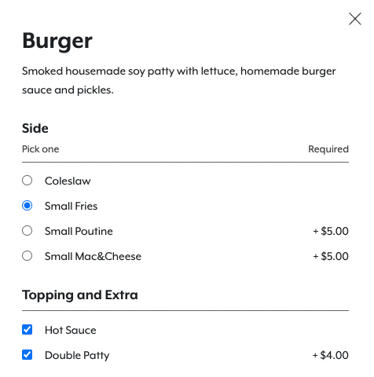

Each of these components is integral to allowing users to select options and make adjustments to settings or features.
Below are demos of each component.
Radio buttons are used when only one option may be picked.
Checkboxes are used when multiple options may be selected.
Toggle buttons are used when a setting must be set to one of two states.
The inputs should be appropriately sized within the context of the text beside the submissions.
Shown below are some examples of checkboxes, radio buttons, and toggle switches on the radish site.
